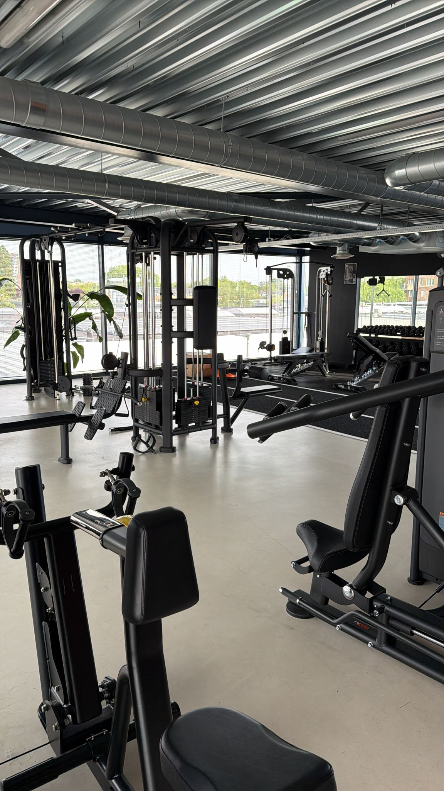

Vrouwen fitness in Leiderdorp die werkt: krachttraining maakt je strakker, sterker en zelfverzekerder, zónder dat je “bulky” wordt. Bij Fit Up train je in een kleinschalige, fijne club met begeleiding op maat — gericht op een vorm en gevoel waar jij blij van wordt. Geen eindeloze cardio, wel zichtbaar resultaat.
Veel vrouwen zoeken vorm, kracht en zelfvertrouwen — niet de allergrootste spieren. Daar trainen we gericht naartoe.
Wat vrouwen tegenhoudt bij krachttraining, en hoe Fit Up Leiderdorp dat rechtzet.
Vier stappen, afgestemd op jouw doel, lichaam en agenda.
Fit Up Leiderdorp biedt vrouwen een fijne, kleinschalige plek om sterker te worden — aan de Weversbaan 9, vlak bij Winkelhof. Goed bereikbaar vanuit Leiderdorp, Leiden, Oegstgeest en Voorschoten, met gratis parkeren.

Plan een gratis intake. We bespreken je doel, beantwoorden je vragen en maken een plan waar jij je goed bij voelt.